13 Electronics Class
By the end of this class you will:
- Understand the basics of using an ESP32 to control an LED.
- Familiarize yourself with essential electronics concepts, including voltage, current, and resistance.
- Get acquainted with the multimeter and its functionalities.
- Learn practical skills in measuring and setting up circuits.
13.1 ESP32 to LED
- Goal: Connect and control an LED using an ESP32 microcontroller.
- Diagram: pin A4 — long leg of LED — short leg of LED — resisistor (330 \(\Omega\)) — GND
see diagram
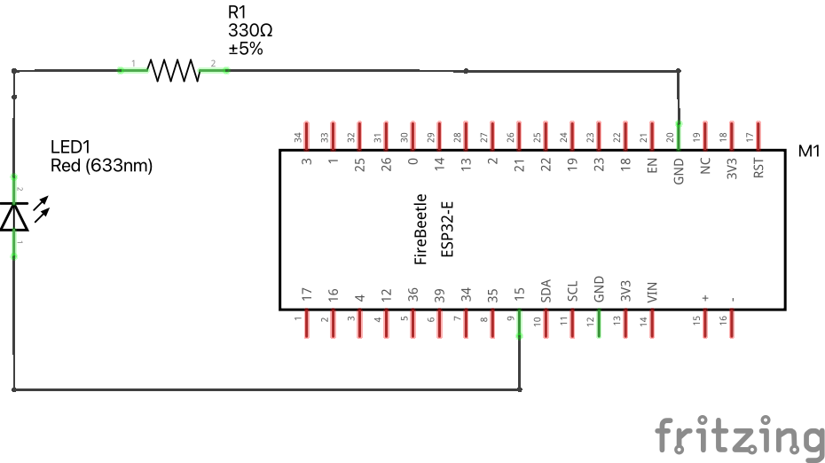see wiring scheme
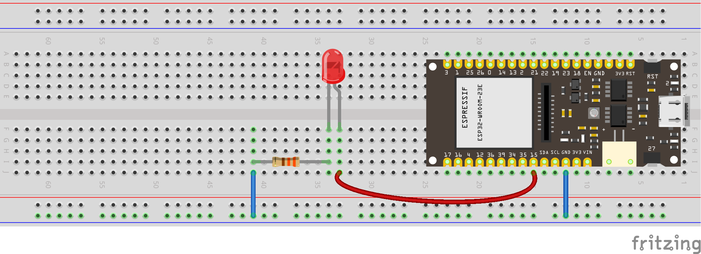Use the following code to activate LED pin.
Download codeint LED_pin = A4;
// the setup function runs once when you press reset or power the board
void setup() {
// initialize digital pin LED_pin as an output.
pinMode(LED_pin, OUTPUT);
}
// the loop function runs over and over again forever
void loop() {
digitalWrite(LED_pin, HIGH); // turn the LED on (HIGH is the voltage level)
delay(3000); // wait for a second
digitalWrite(LED_pin, LOW); // turn the LED off by making the voltage LOW
delay(1000); // wait for a second
}13.2 Measuring Voltage with a Multimeter
To measure voltage with a multimeter, follow these steps:
- Set your multimeter to the DC voltage (V) setting, usually indicated by a straight line and a dashed line beneath it.
- Insert the black probe into the multimeter’s COM port and the red probe into the VΩmA port.
- Connect the black probe to the GND pin on the ESP32 and the red probe to pin A4.
- Observe the voltage reading displayed on the multimeter screen.
see wiring scheme
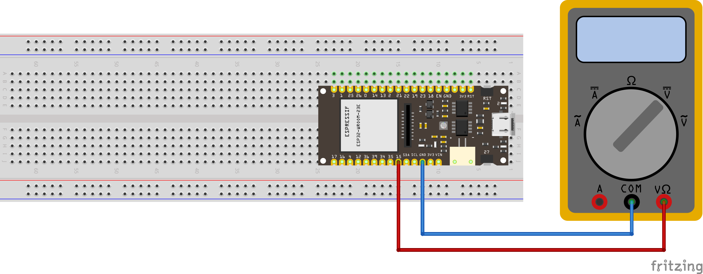13.3 Ohm’s Law
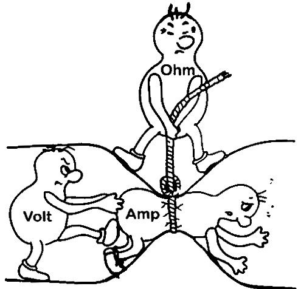
\[ \Delta V = I \cdot R \]
- Concept: Understand the relationship between voltage (V, in volts), current (I, in amperes), and resistance (R, in ohms).
13.4 Power Supply: Setting and Measuring

- Goal: Understand how to set and measure output from a power supply.
- Instructions: Safely configure voltage and measure output using a multimeter.
see wiring scheme
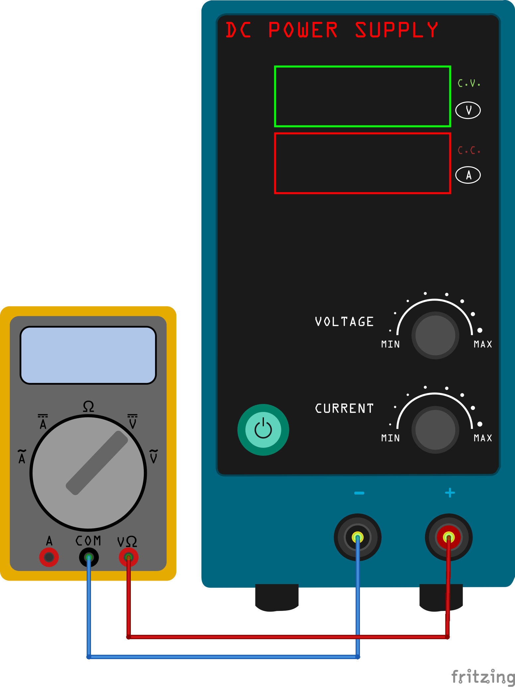13.5 Measuring Resistance
Resistor Color Code Calculator. Pay attention to the number of bands.
- Goal: Measure resistance accurately.
- Activity: Use a multimeter to check the values of different resistors.
Take two different resistors and put them in series and measure the effective resistance.
\[ R_{\text{series}} = R_1 + R_2 \]
see diagram
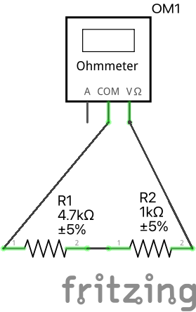see wiring scheme
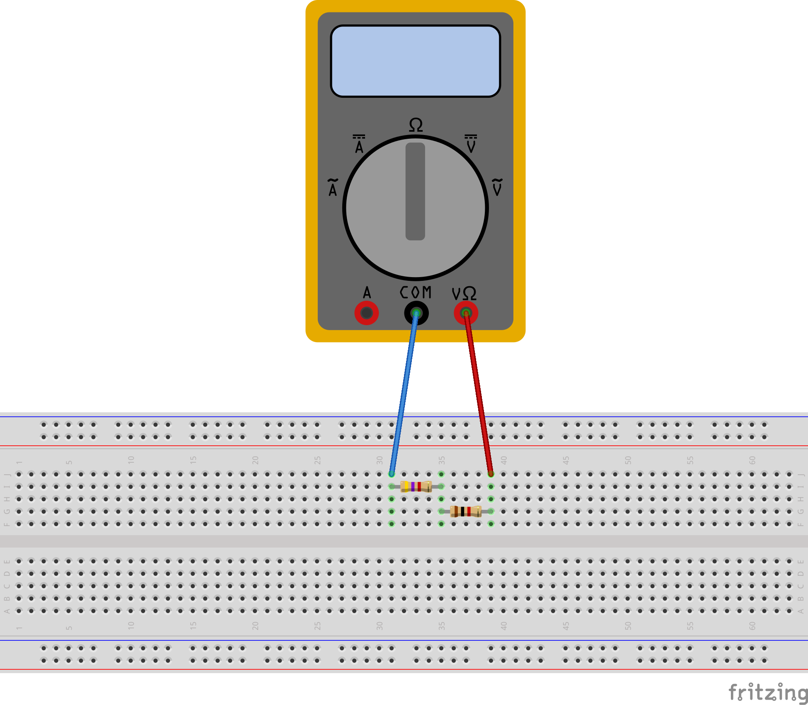Take two different resistors and put them in parallel and measure the effective resistance.
\[ R_{\text{parallel}} = \left( \frac{1}{R_1} + \frac{1}{R_2} \right)^{-1} \]
see diagram
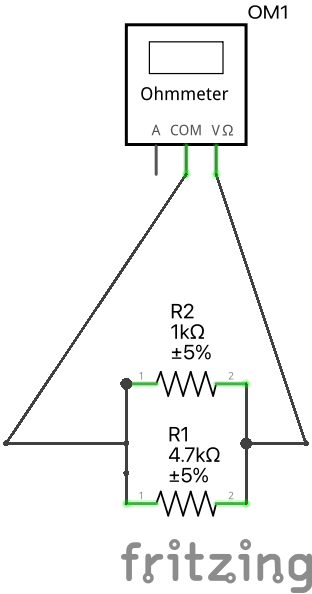see wiring scheme
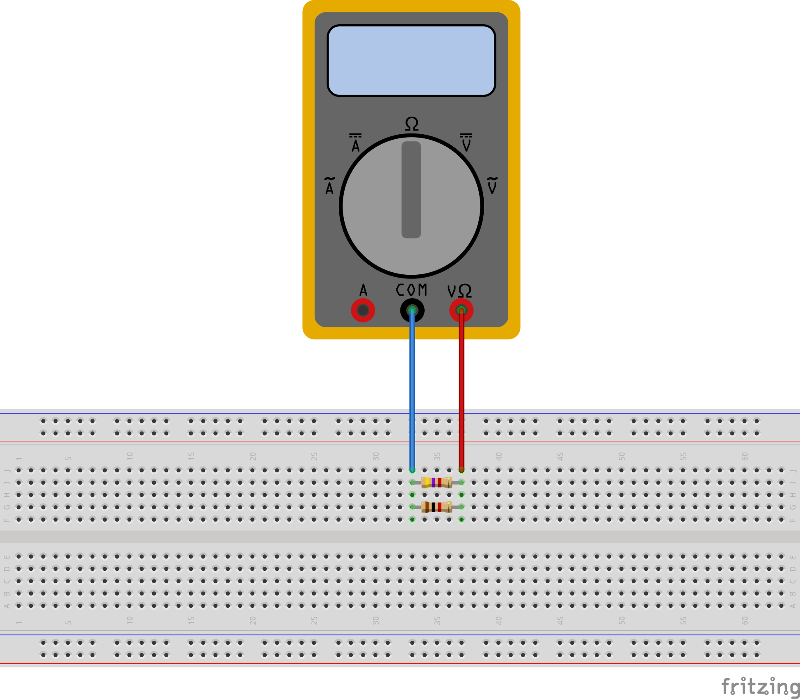13.6 Current Measurement
- Goal: Understand the concept of current and how to measure it.
- Activity: Set up a circuit (one resistor or two resistors in series/parallel) and measure the current flowing through different components. Compare the measurement to what you expect from Ohm’s law.
13.7 Power in Circuits
\[ P = V \cdot I \]
From Ohm’s law and the equation for the power, we can derive \[ P = I^2 \cdot R \]
\[ P = \frac{V^2}{R} \]
- Concept: Calculate power (P, in watts) in electrical circuits using the equation above.
- Application: Get acquainted with the power output of electric components (resistors, LEDs). What happens when the power exceeds their intended value?
13.8 LED Operation at Higher Voltage
- Goal: Explain LED operation and safely operate it with a 10V power source (using resistors or voltage regulators).
- Activity: Set up a circuit to ensure safe operation of the LED at a higher voltage. Calculate the necessary value of the resistor in this configuration (not 330 \(\Omega\)!)
see diagram
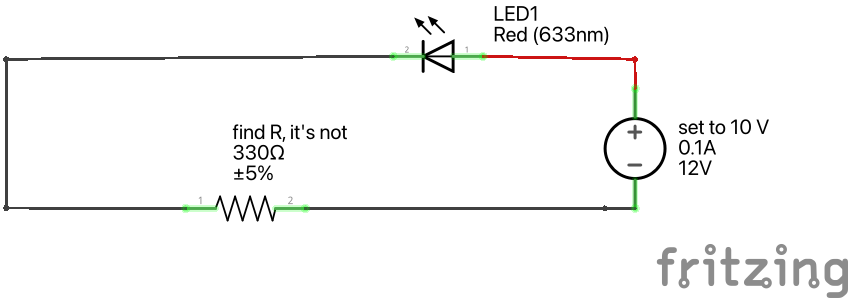see wiring scheme
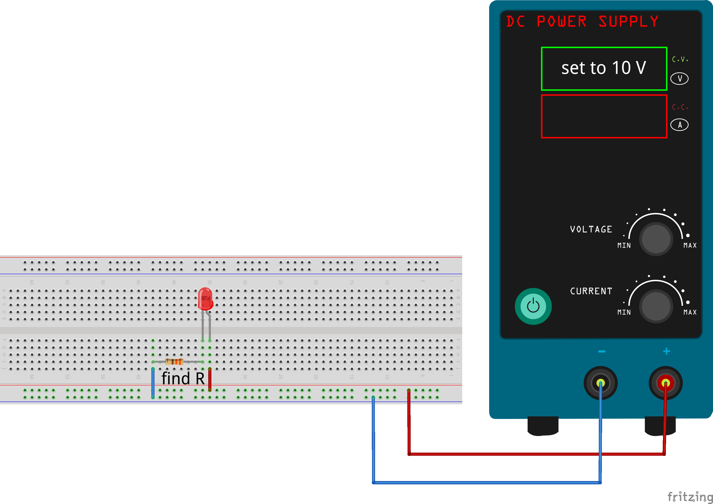Source: Sparkfun 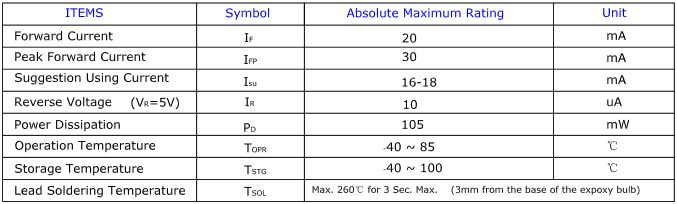
The first row in the table indicates how much current your LED will be able to handle continuously. In this case, you can give it 20mA or less, and it will shine its brightest at 20mA. The second row tells us what the maximum peak current should be for short bursts. This LED can handle short bumps to 30mA, but you don’t want to sustain that current for too long. This datasheet is even helpful enough to suggest a stable current range (in the third row from the top) of 16-18mA. That’s a good target number to help you make the resistor calculations we talked about.
The following few rows are of less importance for the purposes of this tutorial. The reverse voltage is a diode property that you shouldn’t have to worry about in most cases. The power dissipation is the amount of power in milliWatts that the LED can use before taking damage. This should work itself out as long as you keep the LED within its suggested voltage and current ratings.
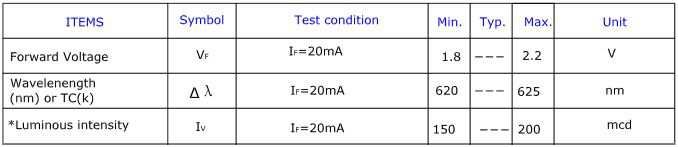
The first row tells us what the forward voltage drop across the LED will be. Forward voltage is a term that will come up a lot when working with LEDs. This number will help you decide how much voltage your circuit will need to supply to the LED. If you have more than one LED connected to a single power source, these numbers are really important because the forward voltage of all of the LEDs added together can’t exceed the supply voltage.
13.9 Potentiometer
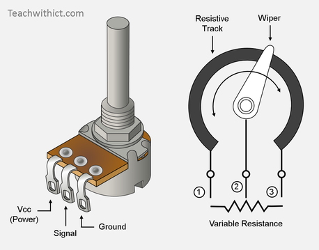
- Goal: Introduce variable resistors and their applications.
Measure the resistance with the multimeter, while twisting the knob.
see diagram
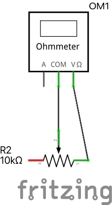see wiring scheme
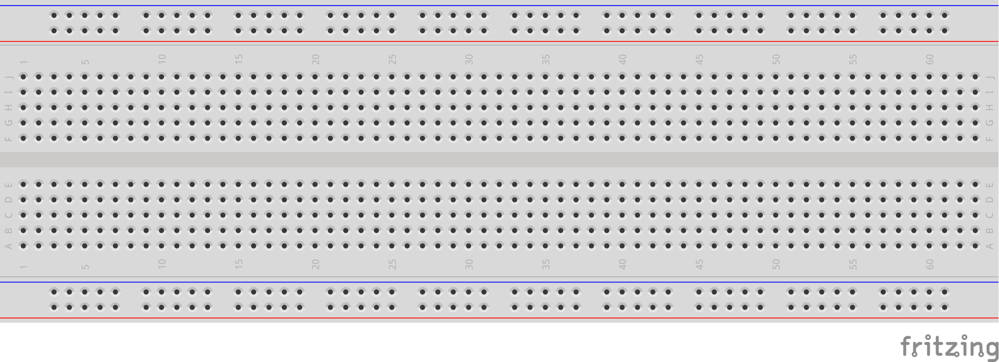Use a potentiometer to control the brightness of an LED or another output device. Add this potentiometer in series in the circuit you have just built, turn the knob and see what happens.
see diagram
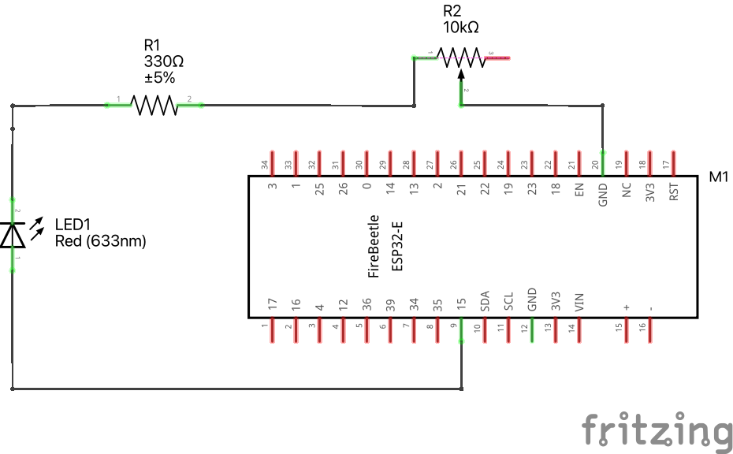see wiring scheme